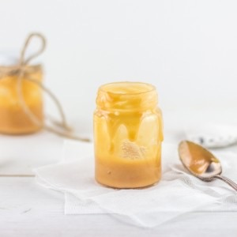

Comment réussir « à coup sûr » son caramel beurre salé

Ici vous trouverez comment ne jamais rater votre caramel beurre salé! Je ne sais pas vous mais moi je suis trop trop fan du caramel beurre salé! Pour la petite histoire (un peu nulle d’ailleurs), j’ai mangé pour la première fois du caramel beurre salé dans un fast-food qui proposé une glace avec du caramel beurre salé sur le dessus. Pas terrible me direz vous! En attendant, c’était tellement bon que je m’en souviens encore! Ensuite j’ai goûté le « vrai » caramel au beurre salé, un peu (beaucoup) différent de celui du fast-food (pas trop difficile de faire mieux en même temps^^) et je me suis encore une fois régalée! Évidemment, il fallait que j’en fasse et au début ce n’était pas très drôle et je pense que vous voyez de quoi je parle! Combien d’entre nous ont essayé de faire du caramel au beurre salé et se sont retrouvés avec quelque chose de super dur, impossible à décoller de la casserole presque une fois sur deux! Bref au début c’était pas vraiment ça mais je ne pouvais pas renoncer aussi facilement alors j’ai continué mes expériences pour être sûre de ne plus jamais le rater! J’ai donc décidé de publier aujourd’hui mon petit secret pour ne plus jamais raté son caramel beurre salé! La recette « classique » dit que l’on doit d’abord faire un caramel puis ajouter de la crème et du beurre…oui mais..c’est généralement là que se produisent quelques catastrophes! J’ai visionné une vidéo (il y a pas mal de temps voire d’années déjà) qui expliquait que l’on pouvait mettre le beurre dès le départ pour éviter que le tout s’amalgame. J’ai donc testé et depuis je ne le fait plus que comme ça et je n’ai plus connu aucune catastrophe!
Si ça vous intéresse la recette est par ici.
Ingrédients
- Sucre - 160g
- Beurre salé - 115g
- Crème liquide entière - 104g
- Fleur de sel
Instructions
- Dans une casserole, faire fondre le beurre et le sucre tout en mélangeant TRÈS régulièrement Attention à bien racler les bords avec une maryse tout le long de la préparation pour éviter que le sucre ne forme ensuite des morceaux dans le caramel
- Attendre que le caramel se forme
- Pendant ce temps, faire tiédir la crème dans un bol et réserver
- Au bout de 5 bonnes minutes, le caramel commence à se former
- Lorsque le caramel a une couleur marron claire (on ne veut pas que le caramel soit un caramel foncé) sortir la casserole du feu
- Hors du feu, verser petit à petit la crème tiède et remuer Pour un caramel plus liquide vous pouvez rajouter de la crème et inversement
- Maintenant vous pouvez rajouter une pincée de fleur de sel mais ça c'est comme vous voulez
Les tips de la communauté
Recette extrêmement populaire avec un succès massif. Les commentaires célèbrent son caractère inratable et sa simplicité. Quelques utilisateurs rapportent des difficultés mineures mais la majorité est conquise.
Astuces
- La technique du beurre et sucre fondus ensemble fonctionne à tous les coups
- Le caramel se conserve 15 jours au frais et peut être réchauffé
- Utiliser du beurre salé ou semi-salé pour un meilleur résultat
- Faire le caramel la veille pour le lendemain est recommandé
Variantes suggérées
- Ajouter une pointe de fleur de sel pour plus de saveur
- Utiliser le caramel dans divers applications : crêpes, cheesecake, douillons
Ajustements signalés
- Attention à ne pas faire brûler le beurre : la couleur doit être dorée, pas noisette
- Le sucre doit bien caraméliser avant d'ajouter la crème : attendre l'apparition de la couleur
- Algunos utilisateurs ont échoué avec une dissociation beurre-sucre ou cristallisation